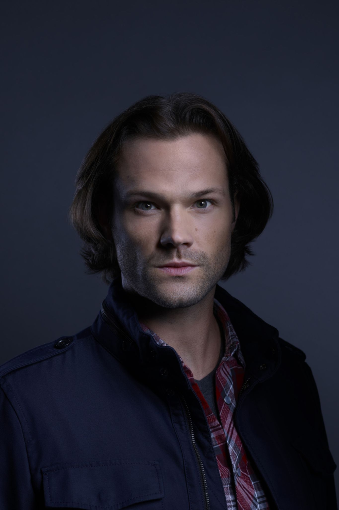
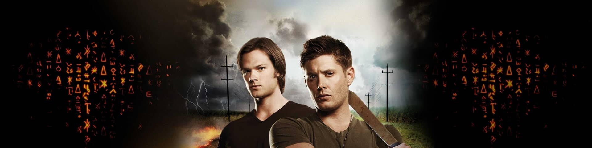
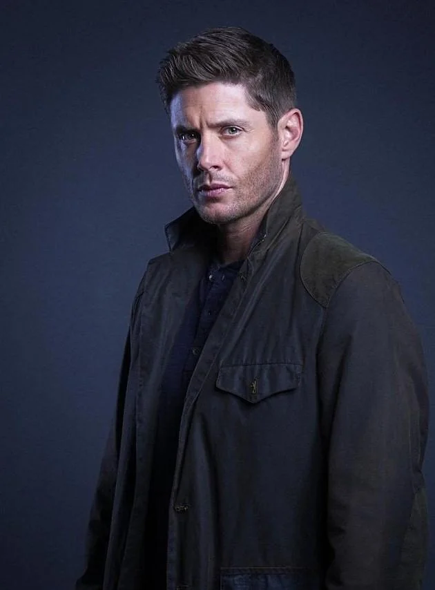
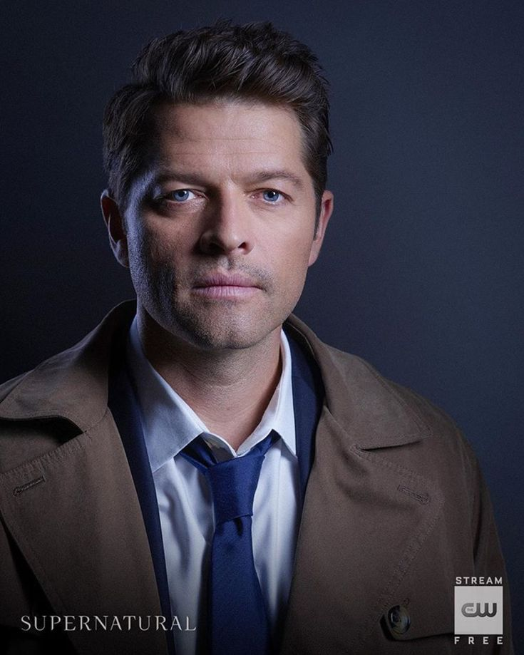
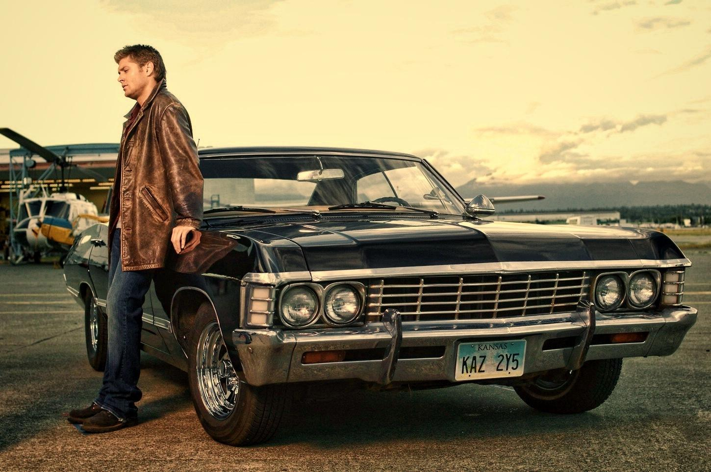

Sam Winchester
O investigador
Curioso e dedicado, Sam procura respostas em livros, pesquisas e nas histórias de quem cruza o caminho dos irmãos.
Interpretado por Jared Padalecki.

Sam e Dean Winchester viajam pelas estradas dos Estados Unidos investigando acontecimentos estranhos e enfrentando fantasmas, demônios e outras criaturas.
Criada por Eric Kripke, Supernatural tem 15 temporadas e 327 episódios. A série mistura suspense, fantasia, humor e rock clássico.
No centro dessa jornada está a relação entre dois irmãos que sempre encontram um motivo para continuar. Além das caçadas, a história fala de família, amizade e lealdade.
"Salvando pessoas, caçando coisas, o negócio da família."
Conheça os irmãos Winchester e um dos seus aliados mais importantes.

O investigador
Curioso e dedicado, Sam procura respostas em livros, pesquisas e nas histórias de quem cruza o caminho dos irmãos.
Interpretado por Jared Padalecki.

O protetor
Determinado e apaixonado por rock clássico, Dean encara o perigo de frente. A família e seu Impala têm um lugar especial em sua vida.
Interpretado por Jensen Ackles.

O aliado
Um anjo que se torna parte da jornada dos Winchester. Com seu sobretudo e jeito reservado, aprende muito sobre os humanos pelo caminho.
Interpretado por Misha Collins.

Muito mais que um meio de transporte, o Chevrolet Impala 1967 preto é o verdadeiro lar de Sam e Dean. O carro guarda um arsenal de caça no porta-malas, fitas cassete de rock clássico e as memórias de uma vida inteira na estrada.